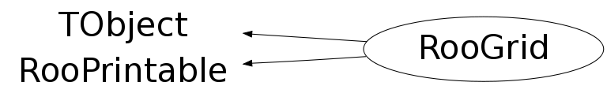

class RooGrid: public TObject, public RooPrintable
RooGrid is a utility class for RooMCIntegrator which implements an adaptive multi-dimensional Monte Carlo numerical integration, following the VEGAS algorithm.
Function Members (Methods)
public:
| RooGrid() | |
| RooGrid(const RooAbsFunc& function) | |
| RooGrid(const RooGrid&) | |
| virtual | ~RooGrid() |
| void | TObject::AbstractMethod(const char* method) const |
| void | accumulate(const UInt_t* bin, Double_t amount) |
| virtual void | TObject::AppendPad(Option_t* option = "") |
| virtual void | TObject::Browse(TBrowser* b) |
| static TClass* | Class() |
| virtual const char* | TObject::ClassName() const |
| virtual void | TObject::Clear(Option_t* = "") |
| virtual TObject* | TObject::Clone(const char* newname = "") const |
| virtual Int_t | TObject::Compare(const TObject* obj) const |
| Double_t | coord(Int_t i, Int_t j) const |
| virtual void | TObject::Copy(TObject& object) const |
| UInt_t* | createIndexVector() const |
| Double_t* | createPoint() const |
| virtual Int_t | RooPrintable::defaultPrintContents(Option_t* opt) const |
| static ostream& | RooPrintable::defaultPrintStream(ostream* os = 0) |
| virtual RooPrintable::StyleOption | RooPrintable::defaultPrintStyle(Option_t* opt) const |
| virtual void | TObject::Delete(Option_t* option = "")MENU |
| virtual Int_t | TObject::DistancetoPrimitive(Int_t px, Int_t py) |
| virtual void | TObject::Draw(Option_t* option = "") |
| virtual void | TObject::DrawClass() constMENU |
| virtual TObject* | TObject::DrawClone(Option_t* option = "") constMENU |
| virtual void | TObject::Dump() constMENU |
| virtual void | TObject::Error(const char* method, const char* msgfmt) const |
| virtual void | TObject::Execute(const char* method, const char* params, Int_t* error = 0) |
| virtual void | TObject::Execute(TMethod* method, TObjArray* params, Int_t* error = 0) |
| virtual void | TObject::ExecuteEvent(Int_t event, Int_t px, Int_t py) |
| virtual void | TObject::Fatal(const char* method, const char* msgfmt) const |
| virtual TObject* | TObject::FindObject(const char* name) const |
| virtual TObject* | TObject::FindObject(const TObject* obj) const |
| void | firstBox(UInt_t* box) const |
| void | generatePoint(const UInt_t* box, Double_t* x, UInt_t* bin, Double_t& vol, Bool_t useQuasiRandom = kTRUE) const |
| UInt_t | getDimension() const |
| virtual Option_t* | TObject::GetDrawOption() const |
| static Long_t | TObject::GetDtorOnly() |
| virtual const char* | TObject::GetIconName() const |
| virtual const char* | TObject::GetName() const |
| UInt_t | getNBins() const |
| UInt_t | getNBoxes() const |
| virtual char* | TObject::GetObjectInfo(Int_t px, Int_t py) const |
| static Bool_t | TObject::GetObjectStat() |
| virtual Option_t* | TObject::GetOption() const |
| virtual const char* | TObject::GetTitle() const |
| virtual UInt_t | TObject::GetUniqueID() const |
| Double_t | getVolume() const |
| virtual Bool_t | TObject::HandleTimer(TTimer* timer) |
| virtual ULong_t | TObject::Hash() const |
| virtual void | TObject::Info(const char* method, const char* msgfmt) const |
| virtual Bool_t | TObject::InheritsFrom(const char* classname) const |
| virtual Bool_t | TObject::InheritsFrom(const TClass* cl) const |
| Bool_t | initialize(const RooAbsFunc& function) |
| virtual void | TObject::Inspect() constMENU |
| void | TObject::InvertBit(UInt_t f) |
| virtual TClass* | IsA() const |
| virtual Bool_t | TObject::IsEqual(const TObject* obj) const |
| virtual Bool_t | TObject::IsFolder() const |
| Bool_t | TObject::IsOnHeap() const |
| virtual Bool_t | TObject::IsSortable() const |
| Bool_t | isValid() const |
| Bool_t | TObject::IsZombie() const |
| virtual void | TObject::ls(Option_t* option = "") const |
| void | TObject::MayNotUse(const char* method) const |
| static void | RooPrintable::nameFieldLength(Int_t newLen) |
| Bool_t | nextBox(UInt_t* box) const |
| virtual Bool_t | TObject::Notify() |
| void | TObject::Obsolete(const char* method, const char* asOfVers, const char* removedFromVers) const |
| static void | TObject::operator delete(void* ptr) |
| static void | TObject::operator delete(void* ptr, void* vp) |
| static void | TObject::operator delete[](void* ptr) |
| static void | TObject::operator delete[](void* ptr, void* vp) |
| void* | TObject::operator new(size_t sz) |
| void* | TObject::operator new(size_t sz, void* vp) |
| void* | TObject::operator new[](size_t sz) |
| void* | TObject::operator new[](size_t sz, void* vp) |
| RooGrid& | operator=(const RooGrid&) |
| virtual void | TObject::Paint(Option_t* option = "") |
| virtual void | TObject::Pop() |
| virtual void | Print(Option_t* options = 0) const |
| virtual void | RooPrintable::printAddress(ostream& os) const |
| virtual void | RooPrintable::printArgs(ostream& os) const |
| virtual void | printClassName(ostream& os) const |
| virtual void | RooPrintable::printExtras(ostream& os) const |
| virtual void | printMultiline(ostream& os, Int_t contents, Bool_t verbose = kFALSE, TString indent = "") const |
| virtual void | printName(ostream& os) const |
| virtual void | RooPrintable::printStream(ostream& os, Int_t contents, RooPrintable::StyleOption style, TString indent = "") const |
| virtual void | printTitle(ostream& os) const |
| virtual void | RooPrintable::printTree(ostream& os, TString indent = "") const |
| virtual void | RooPrintable::printValue(ostream& os) const |
| virtual Int_t | TObject::Read(const char* name) |
| virtual void | TObject::RecursiveRemove(TObject* obj) |
| void | refine(Double_t alpha = 1.5) |
| void | TObject::ResetBit(UInt_t f) |
| void | resetValues() |
| void | resize(UInt_t bins) |
| virtual void | TObject::SaveAs(const char* filename = "", Option_t* option = "") constMENU |
| virtual void | TObject::SavePrimitive(ostream& out, Option_t* option = "") |
| void | TObject::SetBit(UInt_t f) |
| void | TObject::SetBit(UInt_t f, Bool_t set) |
| virtual void | TObject::SetDrawOption(Option_t* option = "")MENU |
| static void | TObject::SetDtorOnly(void* obj) |
| void | setNBoxes(UInt_t boxes) |
| static void | TObject::SetObjectStat(Bool_t stat) |
| virtual void | TObject::SetUniqueID(UInt_t uid) |
| virtual void | ShowMembers(TMemberInspector& insp) |
| virtual void | Streamer(TBuffer& b) |
| void | StreamerNVirtual(TBuffer& b) |
| virtual void | TObject::SysError(const char* method, const char* msgfmt) const |
| Bool_t | TObject::TestBit(UInt_t f) const |
| Int_t | TObject::TestBits(UInt_t f) const |
| virtual void | TObject::UseCurrentStyle() |
| Double_t | value(Int_t i, Int_t j) const |
| virtual void | TObject::Warning(const char* method, const char* msgfmt) const |
| virtual Int_t | TObject::Write(const char* name = 0, Int_t option = 0, Int_t bufsize = 0) |
| virtual Int_t | TObject::Write(const char* name = 0, Int_t option = 0, Int_t bufsize = 0) const |
Data Members
public:
| enum { | maxBins | |
| }; | ||
| enum TObject::EStatusBits { | kCanDelete | |
| kMustCleanup | ||
| kObjInCanvas | ||
| kIsReferenced | ||
| kHasUUID | ||
| kCannotPick | ||
| kNoContextMenu | ||
| kInvalidObject | ||
| }; | ||
| enum TObject::[unnamed] { | kIsOnHeap | |
| kNotDeleted | ||
| kZombie | ||
| kBitMask | ||
| kSingleKey | ||
| kOverwrite | ||
| kWriteDelete | ||
| }; | ||
| enum RooPrintable::ContentsOption { | kName | |
| kClassName | ||
| kValue | ||
| kArgs | ||
| kExtras | ||
| kAddress | ||
| kTitle | ||
| kCollectionHeader | ||
| }; | ||
| enum RooPrintable::StyleOption { | kInline | |
| kSingleLine | ||
| kStandard | ||
| kVerbose | ||
| kTreeStructure | ||
| }; |
protected:
| UInt_t | _bins | |
| UInt_t | _boxes | Number of dimensions, bins and boxes |
| Double_t* | _d | ! Internal workspace |
| Double_t* | _delx | ! Internal workspace |
| UInt_t | _dim | |
| static Int_t | RooPrintable::_nameLength | |
| Bool_t | _valid | Is configuration valid |
| Double_t | _vol | Volume |
| Double_t* | _weight | ! Internal workspace |
| Double_t* | _xi | ! Internal workspace |
| Double_t* | _xin | ! Internal workspace |
| Double_t* | _xl | ! Internal workspace |
| Double_t* | _xu | ! Internal workspace |
Class Charts
{kind=link}
{kind=link}
{kind=link}
{kind=link}

Function documentation
Bool_t initialize(const RooAbsFunc& function)
Calculate and store the grid dimensions and volume using the specified function, and initialize the grid using a single bin. Return kTRUE, or else kFALSE if the range is not valid.
void resize(UInt_t bins)
Adjust the subdivision of each axis to give the specified number of bins, using an algorithm that preserves relative bin density. The new binning can be finer or coarser than the original binning.
void generatePoint(const UInt_t* box, Double_t* x, UInt_t* bin, Double_t& vol, Bool_t useQuasiRandom = kTRUE) const
Generate a random vector in the specified box and and store its coordinates in the x[] array provided, the corresponding bin indices in the bin[] array, and the volume of this bin in vol. The box is specified by the array box[] of box integer indices that each range from 0 to getNBoxes()-1.
void firstBox(UInt_t* box) const
Reset the specified array of box indices to refer to the first box in the standard traversal order.
void printMultiline(ostream& os, Int_t contents, Bool_t verbose = kFALSE, TString indent = "") const
Print info about this object to the specified stream.
void accumulate(const UInt_t* bin, Double_t amount)
Add the specified amount to bin[j] of the 1D histograms associated with each axis j.
void refine(Double_t alpha = 1.5)
Refine the grid using the values that have been accumulated so far. The parameter alpha controls the stiffness of the rebinning and should usually be between 1 (stiffer) and 2 (more flexible). A value of zero prevents any rebinning.
RooGrid()
Double_t coord(Int_t i, Int_t j) const
Accessor for the j-th normalized grid point along the i-th dimension